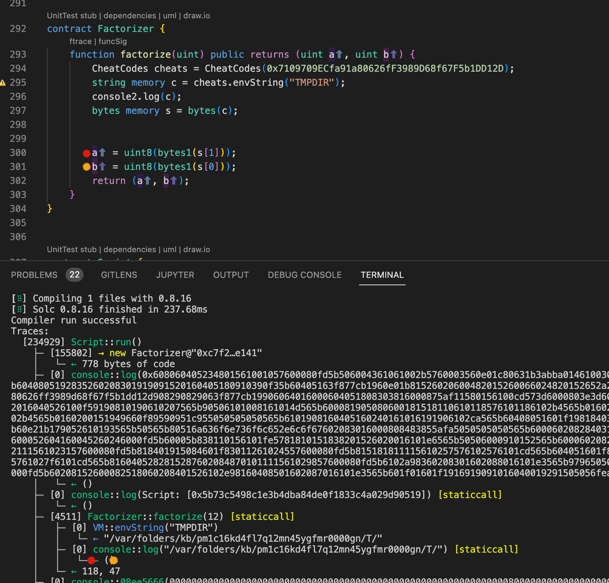

paradigm 2022 ctf 题解——Trapdoor author：Thomas_Xu
题目分析 这个挑战让我挺恼火的，因为这个挑战赛的结构与其他挑战赛完全不同。虽然仍然有通常的chal.py 脚本来设置，但这次没有Setup.sol 。取而代之的是Script.sol ，熟悉Foundry的人应该很快意识到，这不应该部署在任何地方。这些脚本仅在开发环境中本地执行，无需在开发过程中在不同语言之间切换。
有关foundry的知识可以参考我上一篇文章Foundry介绍
先来看python脚本:
1 2 3 4 5 6 7 8 9 10 11 12 13 14 15 16 17 18 19 20 21 22 23 24 25 26 27 28 29 30 31 32 33 34 35 36 37 38 39 40 41 42 43 44 45 46 47 48 49 50 51 52 53 54 55 56 57 58 59 60 61 62 63 64 65 66 67 68 69 70 71 72 73 74 75 76 77 78 79 80 81 82 83 import binasciiimport osimport subprocessimport tempfileimport jsonimport requestsimport eth_sandboxfrom Crypto.Util import numberFLAG = os.getenv("FLAG" , "PCTF{placeholder}" ) def new_factorize_action () : def action () -> int: ticket = eth_sandbox.check_ticket(input("ticket please: " )) if not ticket: print("invalid ticket!" ) return 1 if ticket.challenge_id != eth_sandbox.CHALLENGE_ID: print("invalid ticket!" ) return 1 runtime_code = input("runtime bytecode: " ) try : binascii.unhexlify(runtime_code) except : print("runtime code is not hex!" ) return 1 with tempfile.TemporaryDirectory() as tempdir: with open("./Script.sol" , "r" ) as f: script = f.read() a = number.getPrime(128 ) b = number.getPrime(128 ) script = script.replace("NUMBER" , str(a * b)).replace("CODE" , runtime_code) with open(f"{tempdir} /Script.sol" , "w" ) as f: f.write(script) p = subprocess.run( args=[ "/root/.foundry/bin/forge" , "script" , "Script.sol" , "--tc" , "Script" , ], cwd=tempdir, stdout=subprocess.PIPE, stderr=subprocess.PIPE, ) print() if p.returncode != 0 : print("failed to run script" ) return 1 result = p.stdout.decode("utf8" ).strip().split("\n" )[-1 ].strip() print(result) if result.startswith("you factored the number!" ): print(FLAG) return eth_sandbox.Action(name="factorize" , handler=action) eth_sandbox.run_launcher([ new_factorize_action(), ])
关键的检查在最后：
检查最后一行是否以字符串“你分解了数字！” 开头，如果是，将打印挑战的标志
1 2 3 4 5 6 7 8 9 10 11 12 13 14 15 16 17 18 19 20 21 22 23 // From Script.sol interface FactorizorLike { function factorize(uint) external pure returns (uint, uint); } contract Deployer { constructor(bytes memory code) { assembly { return (add(code, 0x20), mload(code)) } } } contract Script { function run() external { uint expected = NUMBER; FactorizorLike factorizer = FactorizorLike(address(new Deployer(hex"CODE"))); (uint a, uint b) = factorizer.factorize(expected); if (a > 1 && b > 1 && a != expected && b != expected && a != b && expected % a == 0 && expected % b == 0) { console.log("you factored the number! %d * %d = %d", a, b, expected); } else { console.log("you didn't factor the number. %d * %d != %d", a, b, expected); } } }
在Script.sol 中，我们可以找到 NUMBER 和 CODE 占位符。
运行时，我们提供的字节码通过部署程序合约进行部署 。其构造函数中的程序集将确保返回和部署我们的运行时字节码，而不是原始部署者的 运行时字节码（由于它没有函数，因此几乎是空的）。
然后factorize（） 函数在我们部署的字节码上被调用，它应该返回两个数字。基本上，我们应该找到原始的两个相乘导致NUMBER 的数字，并确保我们没有作弊，进行了几次检查。
有趣的是，我们的脚本找到的两个数字如何作为两个日志消息的一部分返回。由于最后一条消息已打印，我们将能够看到字节码最终选择的数字。
在Foundry中的console.log()功能，它们和Hardhat中基本相同。但是——这里没有直接导入console库，而是重新实现了一个console库。
1 2 3 4 5 6 7 8 9 10 11 12 13 14 15 16 17 library console { address constant CONSOLE_ADDRESS = address(0x000000000000000000636F6e736F6c652e6c6f67 ); function _sendLogPayload (bytes memory payload ) private view uint256 payloadLength = payload.length; address consoleAddress = CONSOLE_ADDRESS; assembly { let payloadStart := add(payload, 32 ) let r := staticcall(gas(), consoleAddress, payloadStart, payloadLength, 0 , 0 ) } } function log (string memory p0, uint256 p1, uint256 p2, uint256 p3 ) internal view _sendLogPayload(abi.encodeWithSignature("log(string,uint,uint,uint)" , p0, p1, p2, p3)); } }
漏洞分析 而这个题的解决思路居然是因为 python 的子进程运行泄漏了 FLAG 环境变量，我们可以使用Foundry的作弊码来读取环境变量FLAG，有关Foundry作弊码的更多信息：FoundryBook

true


This is copyright.